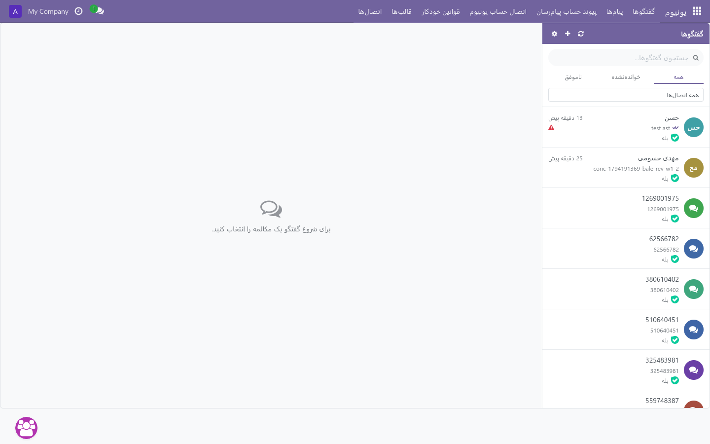
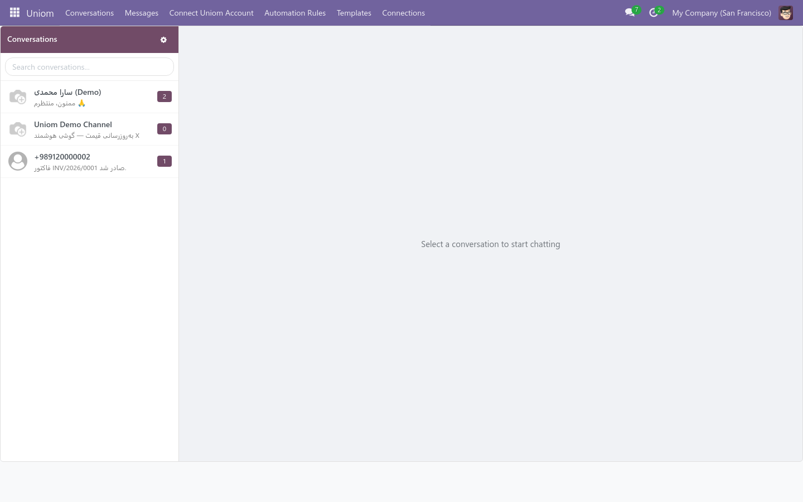
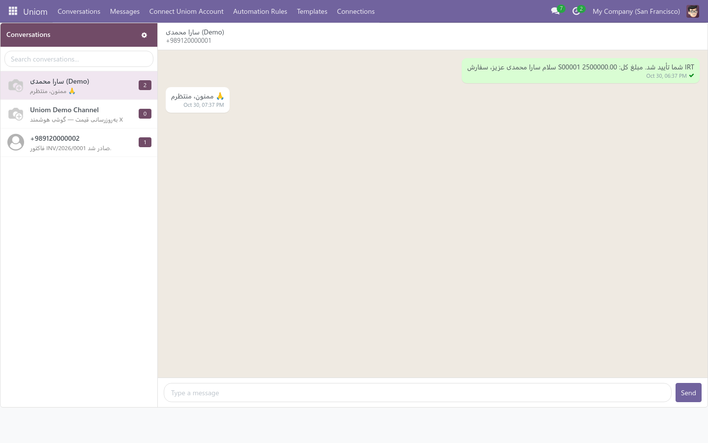
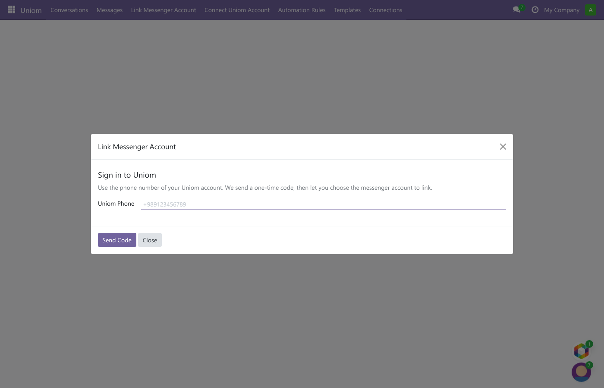
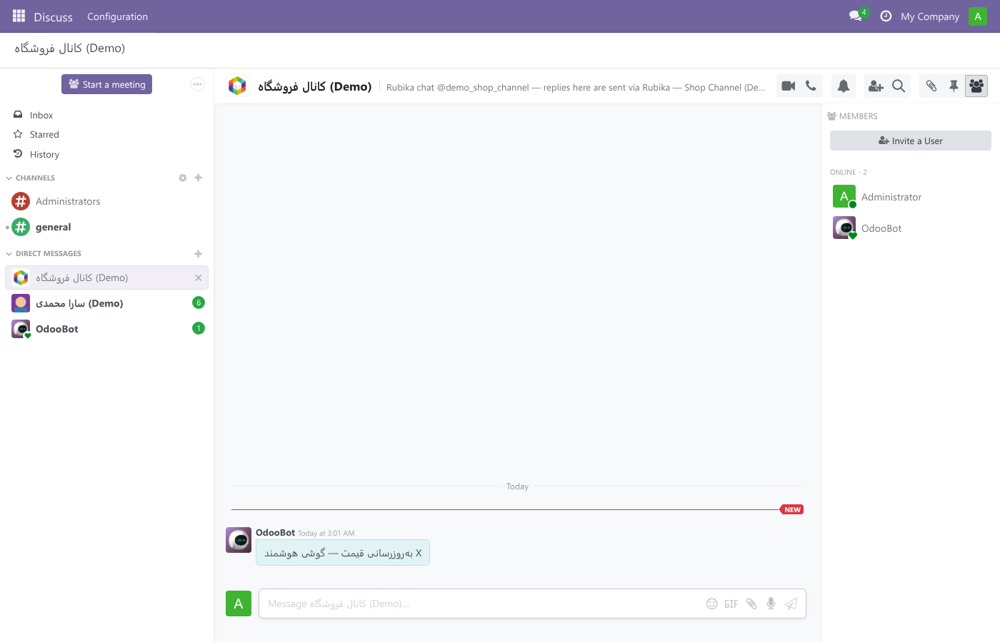

Or paste an API key: login-style setup, gateway-confirmed account

Fully translated and RTL: Persian and Arabic out of the box
Chat with customers on Bale, Rubika, Eitaa, Soroush+ and Telegram straight from Odoo — messenger UI, Discuss threads and event automation, through your Uniom account.
WhatsApp-style Conversations: unread badges, last-seen presence, per-messenger brand icons, media bubbles (photo, video, file, voice, location, poll), history backfill and optimistic sends with retry.
Every conversation mirrors into a native Discuss channel, and replies typed there go out through Uniom. Inbound that works everywhere: webhook or getUpdates polling behind NAT.
Ready rules for quotation sent, order confirmed, invoice posted (PDF attached), payment received, delivery done, product published and price change with in-place message editing in your channel.

Messenger UI: all customer conversations in a two-pane chat

Chat bubbles with delivery state — reply straight from Odoo

Link a messenger account from inside Odoo: phone + OTP, like the Uniom panel

Native Discuss threads: every conversation, two-way
Or paste an API key: login-style setup, gateway-confirmed account

Fully translated and RTL: Persian and Arabic out of the box
Every message is queued, retried with backoff, honors
429 retry_after, and never duplicates a gateway-timed-out
send (504). Failures raise to-dos on the business record; everything is
logged per message and mirrored to the chatter.
Only the data needed to deliver your messages: destination phone/chat id, the rendered message text and, if enabled, the record's PDF report. No Odoo credentials ever leave your server; the gateway URL and API key stay in your database. Customers can opt out per contact.